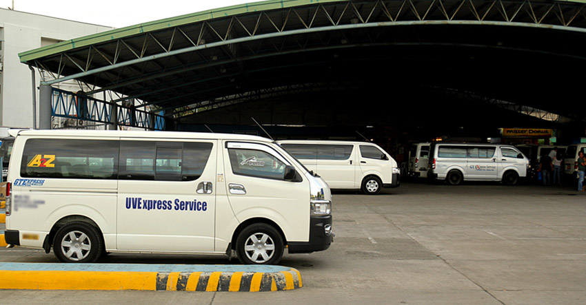
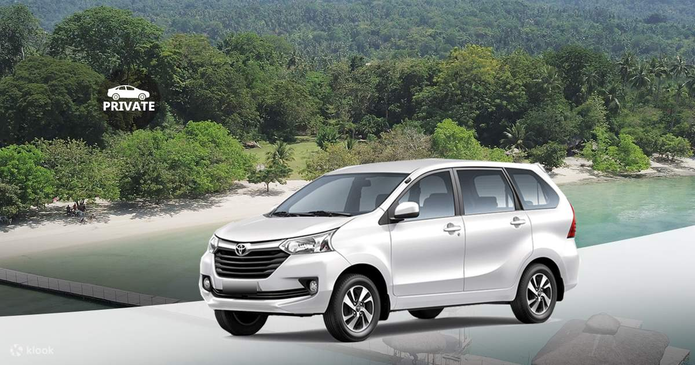

Travel Options

Ecoland Bus Terminal
Catch a premium, air-conditioned bus heading south. Look for signs pointing to Digos or Cotabato.

Van Terminals (UV Express)
Navigate a surreal, moon-like landscape of giant, stark white volcanic rocks and active, steaming sulfur vents near the peak.

Renting a Car
Rent a private vehicle or a 4x4 in Davao City for ultimate freedom in exploring the highlands.